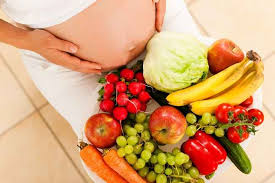

Kebutuhan Nutrisi Ibu Hamil
Masa kehamilan adalah periode krusial di mana kebutuhan nutrisi ibu meningkat signifikan untuk mendukung perkembangan janin dan menjaga kesehatan ibu sendiri. Asupan gizi yang seimbang dan mencukupi akan memengaruhi tumbuh kembang bayi di dalam kandungan dan mengurangi risiko komplikasi kehamilan.
Berikut adalah beberapa nutrisi penting yang harus diperhatikan selama kehamilan:
1. Asam Folat
Asam folat sangat penting untuk mencegah cacat lahir pada otak dan tulang belakang bayi (defek tuba neural). Sumber asam folat bisa didapatkan dari sayuran berdaun hijau gelap, buah jeruk, kacang-kacangan, dan sereal yang difortifikasi. Disarankan untuk mengonsumsi suplemen asam folat sejak sebelum hamil dan selama trimester pertama.
2. Zat Besi
Kebutuhan zat besi meningkat drastis saat hamil karena volume darah ibu bertambah. Zat besi diperlukan untuk mencegah anemia, yang bisa menyebabkan kelelahan ekstrem dan risiko persalinan prematur. Sumber zat besi terbaik antara lain daging merah tanpa lemak, unggas, ikan, bayam, kacang lentil, dan sereal yang difortifikasi. Konsumsi vitamin C bersamaan dengan zat besi dapat membantu penyerapan.
3. Kalsium
Kalsium vital untuk pembentukan tulang dan gigi bayi. Jika asupan kalsium ibu kurang, tubuh akan mengambil kalsium dari tulang ibu. Sumber kalsium meliputi produk susu (susu, yogurt, keju), brokoli, kale, dan susu kedelai yang difortifikasi.
4. Protein
Protein adalah "blok bangunan" tubuh dan sangat penting untuk pertumbuhan jaringan bayi, termasuk otak, darah, dan otot. Ibu hamil disarankan untuk meningkatkan asupan protein dari daging tanpa lemak, ikan, telur, produk susu, serta sumber nabati seperti tahu, tempe, dan kacang-kacangan.
5. Vitamin D
Vitamin D bekerja sama dengan kalsium untuk membangun tulang dan gigi bayi yang kuat. Paparan sinar matahari pagi adalah sumber alami vitamin D, serta bisa didapatkan dari ikan berlemak (salmon, tuna) dan susu yang difortifikasi.
Selalu konsultasikan dengan dokter atau ahli gizi Anda mengenai kebutuhan nutrisi spesifik selama kehamilan. Suplemen mungkin diperlukan untuk memastikan semua kebutuhan gizi terpenuhi.